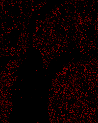
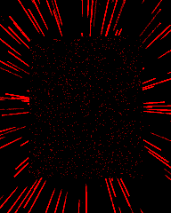
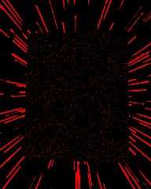
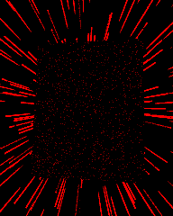
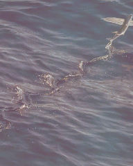
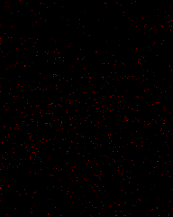

fx-ov-tr-diamond at 0.3 s; RGBA MAE8/p99 [[0, 0], [0, 0], [0, 0], [0, 0]]

Diagnostic only. Shared shaders, owner limits and production frames remain unchanged. Images: mobile / candidate / heatmap.
fx-cc-dance-flash at 0.3 s; RGBA MAE8/p99 [[0.33858506944444444, 8], [0.23858506944444444, 4], [0.2724392361111111, 8], [0, 0]]

fx-hyperspace at 0.3 s; RGBA MAE8/p99 [[2.81328125, 90], [2.9203776041666667, 97], [3.2987413194444444, 107], [0, 0]]

fx-hyperspace at 0.9 s; RGBA MAE8/p99 [[3.191015625, 99], [3.2879774305555554, 105], [3.624978298611111, 124], [0, 0]]

fx-hyperspace at 1.5 s; RGBA MAE8/p99 [[3.544184027777778, 107], [3.684223090277778, 114], [4.104427083333333, 131], [0, 0]]

fx-tr-flare at 0.9 s; RGBA MAE8/p99 [[0.03422309027777778, 0], [0.03619791666666667, 0], [0.049262152777777776, 0], [0, 0]]


fx-ov-tr-diamond at 0.3 s; RGBA MAE8/p99 [[0, 0], [0, 0], [0, 0], [0, 0]]
fx-ov-tr-diamond at 0.9 s; RGBA MAE8/p99 [[0, 0], [0, 0], [0, 0], [0, 0]]

fx-ov-tr-diamond at 2.1 s; RGBA MAE8/p99 [[0, 0], [0, 0], [0, 0], [0, 0]]